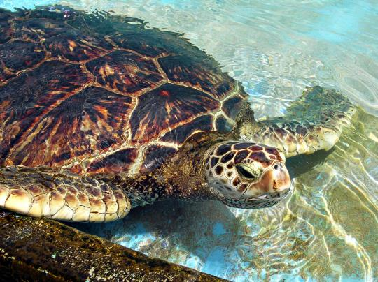
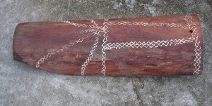
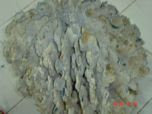

B - b
bɑculɑ बाचूला N सं. big wood-cutting tool; बड़ा लकड़ी काटने का औज़ार. SD: tool, औज़ार.
bɑːɖe बाऽडे INTJ वि बो. oh!; बाप रे! SD: emotion, भावनात्मक.
|
bɑɡɑ बागा N सं. a kind of white flower; एक प्रकार का सफ़ेद फूल. SD: flora, फूल-पत्ती.Environmental
bɑkle बाक्ले Etym: North Andaman; उत्तरी अण्डमान. N सं. a kind of vegetarian food; एक प्रकार की शाकाहारी खाद्य सामग्री. SD: edible item, खाद्य सामग्री.Environmental
bɑlɑ बाला N सं. a variety of black bird; Hair Crested Drongo; एक प्रकार का काला पक्षी. SD: bird, पक्षी. NT: Bird with a tail like a broom. झाड़ू जैसी पूंछ वाली चिड़िया।.Environmental
 |
 bɑlɑʈ बालाट N सं. Asian Fairy-Bluebird; एक प्रकार का हरा पक्षी. Irena puella. SD: bird, पक्षी. NT: Its size is about 25 cm. 25 से.मी. लम्बा।.Environmental
bɑlɑʈ बालाट N सं. Asian Fairy-Bluebird; एक प्रकार का हरा पक्षी. Irena puella. SD: bird, पक्षी. NT: Its size is about 25 cm. 25 से.मी. लम्बा।.Environmental
1.jpg) |
 bɑlɑʈ bɑi1 बालाट बाई N सं. a kind of bird; Violet cuckoo; एक प्रकार का पक्षी. SD: bird, पक्षी. SEE: bɑlɑʈ bɑi2 ‘bird’ ‘पक्षी बालाटhm:{ }बाई}2’.Environmental
bɑlɑʈ bɑi1 बालाट बाई N सं. a kind of bird; Violet cuckoo; एक प्रकार का पक्षी. SD: bird, पक्षी. SEE: bɑlɑʈ bɑi2 ‘bird’ ‘पक्षी बालाटhm:{ }बाई}2’.Environmental
 |
 bɑlɑʈ bɑi2 बालाट बाई N सं. a kind of bird that scares children by stalking them; Greater Racket-tailed Drongo; एक प्रकार का पक्षी जो बच्चों का पीछा करता है. Dicrurus paradiseus otiosus. SD: bird, पक्षी. NT: It has tail like a flag and is about 32 cm long. इसकी पूंछ झंडे की तरह होती है और इसकी कुल लम्बाई लगभग 32 से.मी. होती है।. SEE: bɑlɑʈ bɑi1 ‘bird’ ‘पक्षी बालाटhm:{ }बाई}1’.Environmental
bɑlɑʈ bɑi2 बालाट बाई N सं. a kind of bird that scares children by stalking them; Greater Racket-tailed Drongo; एक प्रकार का पक्षी जो बच्चों का पीछा करता है. Dicrurus paradiseus otiosus. SD: bird, पक्षी. NT: It has tail like a flag and is about 32 cm long. इसकी पूंछ झंडे की तरह होती है और इसकी कुल लम्बाई लगभग 32 से.मी. होती है।. SEE: bɑlɑʈ bɑi1 ‘bird’ ‘पक्षी बालाटhm:{ }बाई}1’.Environmental
bɑlco बालचो V क्रि. hunt (in the forest); शिकार करना (जंगल में).
bɑleu बालेऊ V क्रि. go hunting; hunt; शिकार करने जाना; शिकार करना. bɑleu-m बालेऊम. He goes hunting. वह शिकार करने जाता है।. NT: -m- class verb. ‘म’ कोटि की क्रिया।.
bɑlo बालो N सं. creeper, thorny; एक प्रकार की कांटेदार बेल. SD: flora, फूल-पत्ती. NT: Even elephants avoid it. हाथी भी इस बेल से डरते हैं।.Environmental
 bɑnɑ बाना N सं. a kind of leaf that causes itching if touched; एक प्रकार का पत्ता जिसको छूने से खुजली होती है. SD: flora, फूल-पत्ती.Environmental
bɑnɑ बाना N सं. a kind of leaf that causes itching if touched; एक प्रकार का पत्ता जिसको छूने से खुजली होती है. SD: flora, फूल-पत्ती.Environmental
bɑneb बानेब MORPH: bɑne-b. VAR: bɑːŋɛm बाऽङैम. V क्रि. touch; hold; छूना; पकड़ना. ut-bɑne-ke ऊत बाने के. Move your hand after touching it. छूकर हाथ हटाओ।.
bɑno बानो V क्रि. knit; बुनना.
 bɑrɑbɑ बाराबा Etym: Jeru; जेरू. VAR: bɑrɑbo बाराबो. N सं. mat, sleeping; सोने के लिये चटाई. SD: household, घरेलू. NT: Also used for the dancing ceremony. यह नाच-गाने के अवसर में भी प्रयोग होती है।.
bɑrɑbɑ बाराबा Etym: Jeru; जेरू. VAR: bɑrɑbo बाराबो. N सं. mat, sleeping; सोने के लिये चटाई. SD: household, घरेलू. NT: Also used for the dancing ceremony. यह नाच-गाने के अवसर में भी प्रयोग होती है।.
bɑrɑbɑbenoe बाराबाबेनाए MORPH: bɑrɑbɑ-beno-e. V क्रि. make mat; चटाई बनाना.
 |
bɑrɑlo बारालो N सं. a kind of smooth, shiny, non-poisonous snake with a green-bronze back that lives in the coconut tree; नारियल के पेड़ में रहने वाला हरे रंग का बिना विष वाला चमकदार सांप जिसकी त्वचा चिकनी व फिसलन युक्त होती है. SD: reptile, रेंगने वाले जंतु. NT: The snake is known for its oily secretions, which were supposedly very beneficial for the skin. Young girls catch it to rub it on their bodies as a moisturizer. Generally, while one girl holds the mouth, another rubs the struggling snake against her body and face. Apparently, the struggle increases and enhances the secretion. इस सांप की त्वचा से एक खास तरह का रस निकलता है जो त्वचा के लिए फायदेमंद माना जाता है। अण्डमानी लड़कियां इस सांप को पकड़कर अपनी त्वचा पर रगड़ती हैं। प्रायः जब एक लड़की इसके मुंह को पकड़ती है, तब दूसरी लड़की इस सघंर्षरत सांप को अपने शरीर और चेहरे पर रगड़ती है। नतीजतन इस सांप का सघंर्ष बढ़ने से अधिक रस निकलता है।.Environmental
bɑrɑni बारानी V क्रि. hit; मारना.
bɑrɑŋo बाराङो N सं. a kind of fish; एक प्रकार की मछली. SD: fish, मछली.Environmental
bɑrɑtɑ बाराता Etym: Bea; बेया. N सं. caryota palm; चारयोता ताड़. SD: flora, फूल-पत्ती.Environmental
 |
 bɑrcom बारचोम N सं. a kind of bird; Blue-tailed Bee Eater; एक प्रकार का नीली पूंछ वाला पक्षी जो मधुमक्खी खाता है. Merops philippinus. SD: bird, पक्षी.Environmental
bɑrcom बारचोम N सं. a kind of bird; Blue-tailed Bee Eater; एक प्रकार का नीली पूंछ वाला पक्षी जो मधुमक्खी खाता है. Merops philippinus. SD: bird, पक्षी.Environmental
 |
bɑrcoŋ बारचोङ N सं. Emerald cuckoo; एक प्रकार का हरा पक्षी. Chrysococcyx maculatus. SD: bird, पक्षी. NT: It lays eggs on the ground, feeds on an insect called ‘toimo’ in the language. यह ज़मीन में अण्डे देती है और टोल्मो नाम के कीड़े खाती है।.Environmental
 |
bɑrcɔm1 बारचौम N सं. a kind of bird; Oriental Pratincole, commonly known as Pictahen; एक प्रकार का पक्षी. Glareola maldivarum. SD: bird, पक्षी. NT: It nests on the ground. Its eyes look as if lined with kohl. यह ज़मीन पर घोंसला बनाता है, इसकी आंखें कजरारी होती हैं।. SEE: bɑrcɔm2 ‘shell’ ‘सीपी बारचौमhm:{2}’.Environmental
bɑrcɔm2 बारचौम N सं. small shell used for making jewellery to adorn the knees; छोटी सीपी जो आभूषण बनाने के काम आती है, जिसे पायल की तरह घुटनों तक पहना जाता है. SD: marine, समुद्री. SEE: ʈɔeco ‘anklet; shell anklet’ ‘पायल (घुंघरू); टखना पट्टी टौएचो ’; bɑrcɔm1 ‘bird’ ‘पक्षी बारचौमhm:{1}’.Environmental
bɑrɖeŋo बारडेङो N सं. a type of marble found near Mayabandar; एक प्रकार का संगमरमरी पत्थर जो मायाबंदर के पास मिलता है. SD: natural environment, प्राकृतिक वातावरण.Environmental
bɑrij बारीज N सं. encampment, personal; निजी डेरा. SD: habitat, रहन-सहन.
bɑrmɑlɑo बारमालाओ MORPH: bɑrmɑ-lɑo. N सं. Burmese; बर्मा निवासी. SD: people, लोग.
bɑt बात N सं. night; रात. ɛrŋolot bɑto ऐरङोलोत बातो. It became night as I cried. रोते-रोते रात हो गई।. SD: time, समय.
bɑtɑtɑmikʰu बातातामीखू MORPH: bɑt-ɑtɑ-mikʰu. ADV क्रि वि. middle of the night; आधी रात. SD: time, समय.
 bɑte बाते VAR: bɑtʰe बाथे; ot-bɑʈʰe ओत्बाठे; bɑʈʰe बाठे; ik-bɑtɛ ईकबातै; ik-bɑtʰe ईकबाथे. V क्रि. slap; थप्पड़ मारना.
bɑte बाते VAR: bɑtʰe बाथे; ot-bɑʈʰe ओत्बाठे; bɑʈʰe बाठे; ik-bɑtɛ ईकबातै; ik-bɑtʰe ईकबाथे. V क्रि. slap; थप्पड़ मारना.  ŋɑʈʰutbɑtʰe bɑmo ʈʰoŋolobom ङाठूत्बाथे बामो ठोङोलोबोम. If you slap me, I will cry. अगर तुम मुझे थप्पड़ मारोगे, तो मैं रोऊंगा।.
ŋɑʈʰutbɑtʰe bɑmo ʈʰoŋolobom ङाठूत्बाथे बामो ठोङोलोबोम. If you slap me, I will cry. अगर तुम मुझे थप्पड़ मारोगे, तो मैं रोऊंगा।.
 bɑtel बातेल MORPH: bɑte-l. ADV क्रि वि. in the night; रात में. SD: time, समय.
bɑtel बातेल MORPH: bɑte-l. ADV क्रि वि. in the night; रात में. SD: time, समय.
bɑtʰeʈɛc बाथेटैच MORPH: bɑtʰe-ʈɛc. N सं. a kind of big leaf on which girls sit during menstruation; बड़ा पत्ता जिस पर मासिकी के समय में लड़कियां बैठती हैं. SD: flora, फूल-पत्ती.Environmental
 bɑtɛrkɛl बातैरकैल MORPH: bɑt-ɛr-kɛl. VAR: bɑterkel बातेरकेल. N सं. midnight; मध्यरात्रि. SD: time, समय.
bɑtɛrkɛl बातैरकैल MORPH: bɑt-ɛr-kɛl. VAR: bɑterkel बातेरकेल. N सं. midnight; मध्यरात्रि. SD: time, समय.
bɑtil बातील N सं. dark; darkness; अंधेरा. SD: attribute, विशेषता.
bɑto बातो N सं. a type of round tick; एक प्रकार का गोल पिस्सू. SD: insect & invertebrate, कीट-पतंग एवं अरीढ़ जीव.Environmental
bɑtterbel बात्तेरबेल MORPH: bɑt-ter-bel. ADV क्रि वि. late night; देर रात. SD: time, समय.
bɑːʈom बाऽटोम N सं. a kind of dangerous fish; एक प्रकार की ख़तरनाक मछली. SD: fish, मछली.Environmental
-be -बे VAR: -bi -बी. V क्रि. be; existential; यथार्थवादी होना. nɔl totcyo jukʰi ɲyo ʈʰut-ɲyo-be नौल तोत्च्यो जूखी ञ्यो ठूत्ञ्योबे. The best house is mine. जो घर सबसे अच्छा है, वह मेरा है।. NT: Terminal suffix of the verb stem. क्रिया पद के अंत में लगने वाला उपसर्ग।.
beio बेईओ V क्रि. sting of land leech; डंक मारना (बड़ी जोंक).
bekʰɑ बेखा ADJ वि. useless; बेकार. SD: attribute, विशेषता.
beːl बेऽल N सं. a kind of oyster; एक प्रकार की सीपी. SD: marine, समुद्री.Environmental
belcɑcmo बेलचाचमो N सं. Striated Swallow; एक प्रकार की गौरैया. SD: bird, पक्षी. NT: Household bird, sometimes comes in the house. एक घरेलू चिड़िया, जो अक्सर घर के अंदर घुस आती है।.Environmental
 |
belcɑʈmo बेलचाटमो N सं. a kind of bird; Ashy Drongo; एक प्रकार का पक्षी. Dicrurus. SD: bird, पक्षी.Environmental
 |
 belcitmo बेल्चीत्मो N सं. Hawabill bird; Andaman Edible-nest Swiftlet; हवाबील चिड़िया. Aerodramus esculenta. SD: bird, पक्षी. NT: It is found in Strait Island. It takes at least five days to make its nest which sells well in the market. It never lays more than three eggs at a time. स्ट्रेट द्वीप में रहने वाली चिड़िया जो घोंसला बनाने में पांच दिन लगाती है और तीन से ज़्यादा अण्डे नहीं देती। इसका घोंसला बाज़ार में बहुत महंगा बिकता है ।.Environmental
belcitmo बेल्चीत्मो N सं. Hawabill bird; Andaman Edible-nest Swiftlet; हवाबील चिड़िया. Aerodramus esculenta. SD: bird, पक्षी. NT: It is found in Strait Island. It takes at least five days to make its nest which sells well in the market. It never lays more than three eggs at a time. स्ट्रेट द्वीप में रहने वाली चिड़िया जो घोंसला बनाने में पांच दिन लगाती है और तीन से ज़्यादा अण्डे नहीं देती। इसका घोंसला बाज़ार में बहुत महंगा बिकता है ।.Environmental
bele बेले V क्रि. overflow; छलकना.
belei बेलेई N सं. young sister; जवान बहन. SD: kin term, सम्बंधी वाचक शब्दावली.
 |
 belloʈɔro बेल्लोटौरो MORPH: bello-ʈɔro. VAR: belo-ʈɔrɔ बेलोटौरौ. N सं. green turtle; एक प्रकार का हरा कछुआ. SD: marine, समुद्री.Environmental
belloʈɔro बेल्लोटौरो MORPH: bello-ʈɔro. VAR: belo-ʈɔrɔ बेलोटौरौ. N सं. green turtle; एक प्रकार का हरा कछुआ. SD: marine, समुद्री.Environmental
beloe बेलोए N सं. water after bubbles get settled; बुलबुले ख़त्म होने के बाद का शांत पानी. SD: state, अवस्था.
 |
beloi बेलोई VAR: beloɛ बेलोऐ. N सं. a kind of fish; एक प्रकार की मछली. SD: fish, मछली.Environmental
beloːpok बेलोऽपोक ADV क्रि वि. near; पास. SD: space, अन्तरिक्ष.Environmental
belɔ1 बेलौ V क्रि. get lost; भाग जाओ. SEE: belɔ2 ‘was’ ‘था बेलौhm:{2}’.
belɔ2 बेलौ V क्रि. was; था. SEE: belɔ1 ‘be lost’ ‘खोया होना बेलौhm:{1}’.
bemo बेमो VAR: beːmo बेऽमो; bemu बेमू. N सं. largest butterfly on the islands; द्वीप की सबसे बड़ी तितली. SD: insect & invertebrate, कीट-पतंग एवं अरीढ़ जीव.Environmental
 |
 bemokɑʈɑp बेमोकाटाप MORPH: bemo-kɑʈɑp. N सं. Red-whiskered Andaman Bulbul; बुलबुल. Pycnonotus jocosus. SD: bird, पक्षी. NT: Seemingly shaped like a young girl hence the word ‘kata’, ‘girl’ with ‘-p’, ‘as’. बुलबुल का शरीर जवान लड़की जैसा माना जाता है। अतः इसके नाम में ‘काटा’, ‘लड़की’ और ‘-प’, 'जैसा' नीहित है।.Environmental
bemokɑʈɑp बेमोकाटाप MORPH: bemo-kɑʈɑp. N सं. Red-whiskered Andaman Bulbul; बुलबुल. Pycnonotus jocosus. SD: bird, पक्षी. NT: Seemingly shaped like a young girl hence the word ‘kata’, ‘girl’ with ‘-p’, ‘as’. बुलबुल का शरीर जवान लड़की जैसा माना जाता है। अतः इसके नाम में ‘काटा’, ‘लड़की’ और ‘-प’, 'जैसा' नीहित है।.Environmental
 |
bemututʈoʈol बेमूतूत्टोटोल MORPH: bemu-tut-ʈoʈol. N सं. dotted butterfly; धब्बेदार तितली. SD: insect & invertebrate, कीट-पतंग एवं अरीढ़ जीव.Environmental
 beno बेनो VAR: beŋo बेङो; bono बोनो. V क्रि. sleep; सोना.
beno बेनो VAR: beŋo बेङो; bono बोनो. V क्रि. sleep; सोना.  benobe बेनोबे. (You) sleep. (तुम) सो जाओ।. ɑrɑm-bolikom आरामबोलीकोम. Take rest. आराम करना.
benobe बेनोबे. (You) sleep. (तुम) सो जाओ।. ɑrɑm-bolikom आरामबोलीकोम. Take rest. आराम करना.
 beŋ बेङ VAR: beːn बेऽन. N सं. forehead; head; माथा; सिर.
beŋ बेङ VAR: beːn बेऽन. N सं. forehead; head; माथा; सिर.  ʈʰɛr beŋbi ʈuʈuke ठैर बेङबी टूटूके. Put it on the forehead. इसे माथे पर लगाओ।. meŋŋerbeːn मेङ्ङेरबेऽन. our forehead. हमारा माथा. SD: body part term, शारीरिक अंग शब्दावली.
ʈʰɛr beŋbi ʈuʈuke ठैर बेङबी टूटूके. Put it on the forehead. इसे माथे पर लगाओ।. meŋŋerbeːn मेङ्ङेरबेऽन. our forehead. हमारा माथा. SD: body part term, शारीरिक अंग शब्दावली.
beŋ बेङ Etym: Bo; बो. NEG नका. negative marker, not; मत. cebeŋ चेबेङ. Don’t go. मत जाओ. SD: grammar, व्याकरण.
beɔʈɔ बेऔटौ VAR: beɔːtɔ बेऔऽतौ; biɔʈo बीऔटो; beyoːʈɔ बेयोऽटौ. N सं. a kind of water snake with a criss-cross pattern on its skin; आड़ी-तिरछी चमड़ी वाला पानी का सांप. SD: reptile, रेंगने वाले जंतु.Environmental
berɑmlɑʈ बेरामलाट MORPH: be-rɑm-lɑʈ. ADJ वि. coward; डरपोक. tʰire berɑm lɑʈ थीरे बोराम लाट. The children are coward. बच्चे डरपोक हैं।. SD: attribute, विशेषता.
berebe बेरेबे N सं. sea shell with thin blade; पतली धार वाली सीपी. SD: marine, समुद्री.Environmental
berecer बेरेचेर MORPH: bere-cer. N सं. a tree, the wood of which is used for making bows; पेड़ जिसकी लकड़ी धनुष बनाने में प्रयुक्त होती है. SD: flora, फूल-पत्ती.Environmental
bereːʈ बेरेऽट N सं. a kind of frog; एक प्रकार का मेंढक. SD: animal, जानवर.
 |
berɛ बेरै N सं. Parshaw fish; एक प्रकार की मछली. SD: fish, मछली.Environmental
berɛt बेरैत N सं. frog, small; छोटा मेंढक. SD: animal, जानवर.
beriŋɑ1 बेरीङा Etym: Bea; बेया. ADJ वि. colourful; रंगीन. SD: attribute, विशेषता. SEE: beriŋɑ2 ‘good’ ‘अच्छा बेरीङाhm:{2}’.
beriŋɑ2 बेरीङा Etym: Bea; बेया. ADJ वि. good; अच्छा. SD: attribute, विशेषता. SEE: beriŋɑ1 ‘colourful’ ‘रंगीन बेरीङाhm:{1}’.
beːtlo बेऽतलो N सं. a kind of tree; एक प्रकार का पेड़. SD: flora, फूल-पत्ती.Environmental
beʈɑɸo बेटाफो VAR: bɛːʈtɑːfor बैऽट्ताऽफोर. N सं. forest, thin; कम घना जंगल. SD: flora, फूल-पत्ती.Environmental
beʈoko बेटोको N सं. river; नदी. SD: natural environment, प्राकृतिक वातावरण.Environmental
beʈopʰɑ बेटोफा ADV क्रि वि. near; पास. beʈopʰobe बेटोफोबे. It is very near. (ये) काफी नज़दीक है।. SD: space, अन्तरिक्ष.Environmental
-be/-e -बे/-ए PRN सर्व. imperative; आज्ञासूचक. kʰuro kotrɑ-kɑk ci-be खूरो कोत्राकाक चीबे. Come inside. अंदर आओ।. SD: grammar, व्याकरण. NT: postverbal. वाक्य के अंत में लगने वाला प्रत्यय।.
bɛ बै N सं. liquor; शराब. SD: edible item, खाद्य सामग्री.Environmental
 |
bɛcikluye बैचीकलूये MORPH: bɛc-ik-luye. N सं. tonsure; मुंडन. SD: ritual, रीति-रिवाज़. NT: Equivalent of the Hindu ‘mundan’ or head-shaving ceremony, performed on a 14-day old baby. A blade is now used for the ceremony, which was earlier performed with a piece of glass. The investigators were present for the ceremony of Jirake Jr. It was noticed that many traditional Hindu rituals have been incorporated in the ceremony, reflecting the influence of the mainstream culture on the Great Andamanese. However, unlike the Hindu custom of the barber performing the rituals, the community members themselves take part in shaving the infant’s head. In this case, it was done by Reya and Prem Devi, the non-tribal wife of Loka. 14 दिन के नवजात शिशु का मुंडन किया जाता है। आजकल ब्लेड का प्रयोग होता है पर प्राचीन काल में कांच के टुकड़े का प्रयोग होता था। जिराके जूनियर के मुंडन में हमारी टीम के सदस्य मौजूद थे। मुंडन संस्कार बहुत कुछ भारतीय हिन्दू पद्धति जैसे होते हैं हालांकि पूरे संस्कार में नाई का कोई महत्व नहीं है। समुदाय के लोग ही बच्चे का मुंडन करते हैं। जिराके का मुंडन रेया और प्रेम देवी (लोका की गैर-अण्डमानी पत्नी) ने किया था।.
 bɛi1 बैई Etym: Jeru; जेरू. VAR: bei बेई; bey बेय. N सं. bottle; बोतल; शीशी.
bɛi1 बैई Etym: Jeru; जेरू. VAR: bei बेई; bey बेय. N सं. bottle; बोतल; शीशी.  beibi tunʈɔlo बेईबी तून्टौलो. The bottle broke. बोतल टूट गई।. SD: household, घरेलू. SEE: bɛi2 ‘liquor’ ‘शराब बैईhm:{2}’.
beibi tunʈɔlo बेईबी तून्टौलो. The bottle broke. बोतल टूट गई।. SD: household, घरेलू. SEE: bɛi2 ‘liquor’ ‘शराब बैईhm:{2}’.
 bɛi2 बैई Etym: Jeru; जेरू. VAR: bei बेई; bey बेय. N सं. liquor; शराब. SD: edible item, खाद्य सामग्री. SEE: bɛi1 ‘bottle’ ‘बोतल; शीशी बैईhm:{1}’.Environmental
bɛi2 बैई Etym: Jeru; जेरू. VAR: bei बेई; bey बेय. N सं. liquor; शराब. SD: edible item, खाद्य सामग्री. SEE: bɛi1 ‘bottle’ ‘बोतल; शीशी बैईhm:{1}’.Environmental
bɛitɑpʰul बैईताफूल MORPH: bɛi-tɑ-pʰul. N सं. cap, of a bottle; बोतल का ढक्कन. SD: household, घरेलू.
bɛl बैल V क्रि. clean; साफ़ करना. ʈʰi-bi ɛt bɛle ठी बी ऐत बैले. Clean the place. ज़मीन साफ़ करो।.
bɛːlcɑy बैऽल्चाय N सं. Baluwa fish; एक प्रकार की मछली. SD: fish, मछली.Environmental
bɛːmo बैऽमो N सं. bulbul; बुलबुल. SD: bird, पक्षी.Environmental
bɛnil बैनील MORPH: bɛn-il. V क्रि. soften; नरम होना. jiro miʈʰe bɛnil जीरो मीठे बैनील. Jiro Mithe became soft. जीरो मीठे नरम हो गया।.
 bɛŋ बैङ VAR: bɛːŋ बैऽङ. N सं. mud; कीचड़. SD: natural environment, प्राकृतिक वातावरण.Environmental
bɛŋ बैङ VAR: bɛːŋ बैऽङ. N सं. mud; कीचड़. SD: natural environment, प्राकृतिक वातावरण.Environmental
bɛŋsobo बैङसोबो MORPH: bɛŋ-sobo. N सं. smell of mud in the mangrove; दलदल या खाड़ी में मिट्टी की गंध. SD: attribute, विशेषता.
 |
bɛɲe बैञे VAR: beɲe बेञे; beŋe बेङे. N सं. vulture; kite; बाज. SD: bird, पक्षी. NT: Serpent Eagle, 50 cm long, dark brown with white spots on the chest and belly. It is an endemic resident species limited to the Andaman Islands. It inhabits open forested areas, and feeds on rats, lizards and snakes. 50 से.मी. लम्बा सर्प-बाज जिसकी भूरी छाती और पेट पर सफ़ेद-सफ़ेद छींटे होते हैं। यह सिर्फ़ अण्डमान के खुले जंगलों में पाया जाता है। इसका प्रिय भोजन चूहे, छिपकली और सांप हैं।.Environmental
bɛterbɑt बैतेरबात N सं. shell used for shaving and cutting; सीपी जो काटने व दाढ़ी बनाने के लिये प्रयोग में आती है. SD: marine, समुद्री.Environmental
bɛtɛcbɛno बैतैच्बैनो MORPH: bɛ-tɛc-bɛno. V क्रि. pull hair; बाल खींचना.
bɛttʰil बैत्थील MORPH: bɛttʰ-il. V क्रि. abused; scolded; गाली दी; डांटा.
bibicɑo बीबीचाओ MORPH: bibi-cɑo. Etym: Khora; खोरा. N सं. bitch, she dog; कुतिया. SD: animal, जानवर.
biɖde बीड्दे MORPH: biɖ-de. N सं. edge, of the sea; समुद्र का किनारा. SD: direction, दिशा.Environmental
 |
biɖo बीडो N सं. a tree used for emergency water; एक प्रकार का पेड़ जो आपातकालीन पानी के लिए प्रयोग होता है. SD: flora, फूल-पत्ती.Environmental
biɖocɛ बीडोचै MORPH: biɖo-cɛ. N सं. thorn, of the cane; बेंत का कांटा. SD: flora, फूल-पत्ती.Environmental
 |
biɖotɛc बीडोतैच MORPH: biɖo-tɛc. N सं. a type of cane leaf used for making mats; बेंत का पत्ता जो चटाई बनाने के काम आता है. SD: flora, फूल-पत्ती.Environmental
biɖotɛclɑo बीडोतैचलाओ MORPH: biɖo-tɛc-lɑo. N सं. a kind of devil; ghost; monster; एक प्रकार का दैत्य; भूत; राक्षस. SD: mythology, पौराणिक.
bie बीए Etym: Sare; सारे. ADJ वि. burnt; जला हुआ. SD: attribute, विशेषता.
biebɔm बीएबौम MORPH: bie-bɔm. V क्रि. buy; खरीदना. ʈʰo-cɑe bie bɔm ठोचाए बीए बौम. I will buy something. मैं कुछ खरीदूंगा या खरीदूंगी।.
bijo बीजो Etym: North Andaman; उत्तरी अण्डमान. N सं. a large sour fruit found in the forest; जंगल का एक बड़ा खट्टा फल. SD: edible fruit, खाद्य फल.Environmental
bikɑbuli बीकाबूली ADJ वि. together; इकट्ठे. SD: attribute, विशेषता.
bikʰɑleme बीखालेमे MORPH: bi-kʰɑleme. ADJ वि. helpless; बेचारा. SD: attribute, विशेषता.
 |
bikʰir बीखीर N सं. a kind of fish; एक प्रकार की मछली. SD: fish, मछली.Environmental
biku बीकू V-TR स क्रि. burn; जलाना. ɑʈ-biku-be आट बीकू बे. Ignite fire. आग जलाओ।. siɡrit-biku-be सीगरीट बीकू बे. Light the cigarette. सिगरेट जला दो।.
bil1 बील V क्रि. come from; (कहीं से) आना.  še-ʈɑ-nio-bilo शेटानीओबीलो. Where have you come from? तुम कहां से आ रहे हो? SEE: bil2 ‘go from’ ‘(कहीं से) जाना बीलhm:{2}’.
še-ʈɑ-nio-bilo शेटानीओबीलो. Where have you come from? तुम कहां से आ रहे हो? SEE: bil2 ‘go from’ ‘(कहीं से) जाना बीलhm:{2}’.
bil2 बील V क्रि. go from; (कहीं से) जाना.  kʰil-tɑ ʈʰu-io belo खीलता ठूईओ बेलो. I am going from here. मैं यहाँ से जा रहा हूं।. SEE: bil1 ‘come from’ ‘(कहीं से) आना बीलhm:{1}’.
kʰil-tɑ ʈʰu-io belo खीलता ठूईओ बेलो. I am going from here. मैं यहाँ से जा रहा हूं।. SEE: bil1 ‘come from’ ‘(कहीं से) आना बीलhm:{1}’.
bilcɑːcmo बीलचाऽचमो N सं. a kind of bird; एक प्रकार का पक्षी. SD: bird, पक्षी.Environmental
 bilikʰu1 बीलीखू N सं. god (of the Jeru); north-east storm; जेरो का देवता; उत्तर-पूर्वी तूफ़ान. ɑ bilikʰu kɑ jobe-sɑrɑ-kom आ बीलीखू का जोबे सारा कोम. We sing the song of god. हम भगवान का गाना गाते हैं।. SD: mythology, पौराणिक. SEE: bilikʰu2 ‘spider’ ‘मकड़ी बीलीखूhm:{2}’; bilikʰu3 ‘time period, of the months of January and February’ ‘समय, जनवरी व फरवरी माह का बीलीखूhm:{3}’.
bilikʰu1 बीलीखू N सं. god (of the Jeru); north-east storm; जेरो का देवता; उत्तर-पूर्वी तूफ़ान. ɑ bilikʰu kɑ jobe-sɑrɑ-kom आ बीलीखू का जोबे सारा कोम. We sing the song of god. हम भगवान का गाना गाते हैं।. SD: mythology, पौराणिक. SEE: bilikʰu2 ‘spider’ ‘मकड़ी बीलीखूhm:{2}’; bilikʰu3 ‘time period, of the months of January and February’ ‘समय, जनवरी व फरवरी माह का बीलीखूhm:{3}’.
 |
 bilikʰu2 बीलीखू N सं. spider; मकड़ी. SD: insect & invertebrate, कीट-पतंग एवं अरीढ़ जीव. SEE: bilikʰu1 ‘god (of the Jeru); north-east storm’ ‘देवता (जेरो का); उत्तर-पूर्वी तूफ़ान बीलीखूhm:{1}’; bilikʰu3 ‘time period, of the months of January and February’ ‘जनवरी व फरवरी माह का समय बीलीखूhm:{3}’.Environmental
bilikʰu2 बीलीखू N सं. spider; मकड़ी. SD: insect & invertebrate, कीट-पतंग एवं अरीढ़ जीव. SEE: bilikʰu1 ‘god (of the Jeru); north-east storm’ ‘देवता (जेरो का); उत्तर-पूर्वी तूफ़ान बीलीखूhm:{1}’; bilikʰu3 ‘time period, of the months of January and February’ ‘जनवरी व फरवरी माह का समय बीलीखूhm:{3}’.Environmental
 bilikʰu3 बीलीखू N सं. time period, of the months of January and February; जनवरी व फरवरी माह का समय. SD: time, समय. SEE: bilikʰu1 ‘god (of the Jeru); north-east storm’ ‘देवता (जेरो का); उत्तर-पूर्वी तूफ़ान बीलीखूhm:{1}’; bilikʰu2 ‘spider’ ‘मकड़ी बीलीखूhm:{2}’.
bilikʰu3 बीलीखू N सं. time period, of the months of January and February; जनवरी व फरवरी माह का समय. SD: time, समय. SEE: bilikʰu1 ‘god (of the Jeru); north-east storm’ ‘देवता (जेरो का); उत्तर-पूर्वी तूफ़ान बीलीखूhm:{1}’; bilikʰu2 ‘spider’ ‘मकड़ी बीलीखूhm:{2}’.
bilikʰu bɔtɔ बीलीखू बौतौ N सं. god (of the Jeru); जेरो के एक देवता. SD: mythology, पौराणिक.
 bilikʰutɑrɑcɑ बीलीखूताराचा MORPH: bilikʰu-tɑrɑ-cɑ. VAR: bilikʰu-rɑ-cɑ बीलीखूराचा. N सं. spider web; मकड़जाल. SD: natural environment, प्राकृतिक वातावरण.Environmental
bilikʰutɑrɑcɑ बीलीखूताराचा MORPH: bilikʰu-tɑrɑ-cɑ. VAR: bilikʰu-rɑ-cɑ बीलीखूराचा. N सं. spider web; मकड़जाल. SD: natural environment, प्राकृतिक वातावरण.Environmental
bilikʰutɑrɑpʰoŋ बीलीखूताराफोङ MORPH: bilikʰu-tɑrɑ-pʰoŋ. N सं. heaven; sky; स्वर्ग; आकाश. SD: natural environment, प्राकृतिक वातावरण, mythology, पौराणिक.Environmental
 |
bilikʰututŋeo बीलीखूतूतङेओ MORPH: bilikʰu-tut-ŋeo. VAR: bilikʰut-ɲo बीलीखूतञो. N सं. cobweb; मकड़जाल. SD: insect & invertebrate, कीट-पतंग एवं अरीढ़ जीव.Environmental
biliʈe बीलीटे N सं. mist; धुंध. SD: natural environment, प्राकृतिक वातावरण.Environmental
bilixu बीलीखू N सं. a god; एक देवता. SD: mythology, पौराणिक.
bilixuboːtʰo बीलीखूबोऽथो MORPH: bilixu-boːtʰo. N सं. winter monsoon; दिसम्बर मास का मानसून. SD: season, मौसम.Environmental
bilixutɑrɑːfoŋ बीलीखूताराऽफोङ MORPH: bilixu-tɑrɑː-foŋ. N सं. east, lit. opening/hole of god; पूर्व, शाब्दिक अर्थः भगवान का घर. SD: direction, दिशा.Environmental
billiɔrɔ बील्लीऔरौ MORPH: billi-ɔrɔ. N सं. a kind of flower which grows on sandy beaches; एक प्रकार का फूल जो बालू में खिलता है. SD: flora, फूल-पत्ती.Environmental
billu बील्लू VAR: rowɑ-kʰuro रोवा-खूरो. N सं. boat (big); बड़ी नाव. SD: boat related, नाव सम्बंधी.Environmental
bilo बीलो V क्रि. go away; चले जाओ.
 |
bilotɛc बीलोतैच MORPH: bilo-tɛc. N सं. a kind of leaf; एक प्रकार का पत्ता. SD: flora, फूल-पत्ती.Environmental
 bilu बीलू VAR: biːlʷu बीऽल्वू. N सं. ship; जलपोत; जहाज़. SD: boat related, नाव सम्बंधी.Environmental
bilu बीलू VAR: biːlʷu बीऽल्वू. N सं. ship; जलपोत; जहाज़. SD: boat related, नाव सम्बंधी.Environmental
bilup1 बीलूप N सं. mixture, of red soil and fat; लाल मिट्टी व चर्बी का मिश्रण. SD: cultural item, सांस्कृतिक सामग्री. SEE: bilup2 ‘remember’ ‘याद करना बीलूपhm:{2}’.
bilup2 बीलूप V क्रि. remember; याद रखना. bilup-bo बीलूप बो. He remembered it. उसे वह याद रहा. SEE: bilup1 ‘remember’ ‘याद करना बीलूपhm:{1}’.
bilupʰ बीलूफ V क्रि. feel remorse; पश्चाताप करना. u-bilu-pʰ-om ऊबीलूफोम. He feels remorse. वह पश्चाताप करता है।.
bilupbu बीलूप्बू MORPH: bilup-bu. V क्रि. remind; याद दिलाना.
bilurɔːwɔ बीलूरौऽवौ MORPH: bilur-ɔːwɔ. N सं. rainbow; इंद्रधनुष. SD: natural environment, प्राकृतिक वातावरण.Environmental
bilutɑrɑcum बीलूताराचूम MORPH: bilu-tɑrɑ-cum. N सं. rainbow; इंद्रधनुष. SD: natural environment, प्राकृतिक वातावरण.Environmental
bimɛni बीमैनी V क्रि. burn (by walking on the hot surface); जलना (गर्म सतह पर चलने से).
bimoɛr बीमोऐर MORPH: bi-moɛr. PRN सर्व. you (pl. honorific); आप लोग. SD: pronominal, सर्वनाम.
-bim/-bem/-um/-im/-em -बीम/-बेम/-ऊम/-ईम/-एम PARTICLE नि. negative imperative; मत. lico ɑʈbi iku-b-im लीचो आटबी ईकूबीम. Lico, do not burn the wood. लीचो, लकड़ी मत जलाओ।. ŋo ekʰe-bim ङोएखे बीम. Don’t lie. झूठ मत बोलो।. ŋo-šup-bi no-im ङो शूप बी नोईम. Don’t weave the basket. टोकरी मत बूनो।. SD: grammar, व्याकरण.
bim-/ben-/en- बीम-/बेन-/एन- CLT क्लिटिक. verbal prefix to mark passive; उपसर्ग जो क्रिया को कर्मप्रधान बनाता है. SD: grammar, व्याकरण.
binʈɔlo बीन्टौलो MORPH: bin-ʈɔlo. V क्रि. blooming; खिलना.
biŋo बीङो V क्रि. overhear; किसी की बात चुपके से सुनना.
bip बीप VAR: biːp बीऽप. N सं. dust; धूल. SD: natural environment, प्राकृतिक वातावरण.Environmental
birɑdi बीरादी N सं. shore; समुद्र का किनारा. SD: natural environment, प्राकृतिक वातावरण, marine, समुद्री.Environmental
 |
birɑle बीराले N सं. sunset; सूर्यास्त. SD: natural environment, प्राकृतिक वातावरण.Environmental
 |
 birei बीरेई Etym: Jeru; जेरू. VAR: bire बीरे; bireːi बीरेऽई; birɛi बीरैई; bireːy बीरेऽय. Etym: Jeru; जेरू. VAR: birɛi बीरैई. N सं. a kind of big bat; एक प्रकार का विशाल चमगादड़. SD: animal, जानवर.
birei बीरेई Etym: Jeru; जेरू. VAR: bire बीरे; bireːi बीरेऽई; birɛi बीरैई; bireːy बीरेऽय. Etym: Jeru; जेरू. VAR: birɛi बीरैई. N सं. a kind of big bat; एक प्रकार का विशाल चमगादड़. SD: animal, जानवर.
biretʰire बीरेथीरे MORPH: bire-tʰire. N सं. young bat; बच्चा चमगादड़. SD: animal, जानवर.
bireye बीरेये N सं. bat, female; मादा चमगादड़. SD: animal, जानवर.
biːrik बीऽरीक N सं. beans; सेम; छीमी; फली. SD: flora, फूल-पत्ती.Environmental
biritcɑo बीरीत्चाओ MORPH: birit-cɑo. VAR: birik-cɑo बीरीकचाओ. N सं. monkey; बंदर. SD: animal, जानवर. SEE: kʰeŋe ‘cat’ ‘बिल्ली खेञे ’.
 biriu1 बीरीऊ VAR: biriyu बीरीयू; biːriw बीऽरीव. N सं. dirty water; गंदा पानी. SD: natural environment, प्राकृतिक वातावरण. SEE: biriu2 ‘milk’ ‘दूध बीरीऊhm:{2}’.Environmental
biriu1 बीरीऊ VAR: biriyu बीरीयू; biːriw बीऽरीव. N सं. dirty water; गंदा पानी. SD: natural environment, प्राकृतिक वातावरण. SEE: biriu2 ‘milk’ ‘दूध बीरीऊhm:{2}’.Environmental
biriu2 बीरीऊ VAR: biriyu बीरीयू; biːriw बीऽरीव. N सं. milk; दूध. SD: edible item, खाद्य सामग्री. SEE: biriu1 ‘dirty water’ ‘गंदा पानी बीरीऊhm:{1}’.Environmental
bit1 बीत VAR: bitʰ बीथ. V क्रि. drown (animate); डूबना (सजीव). ŋu-bit-bim ङूबीत्बीम. Don’t drown. डूब मत जाना।. nu-bitʰo नू-बीथो. people drowned. लोग डूब गए।. SEE: bit2 ‘filling of nose with water’ ‘पानी घुसना (नाक में) बीतhm:{2}’.
bit2 बीत V क्रि. filling of nose with water while bathing or swimming; नहाते या तैरते हुए नाक में पानी घुसना. tʰire-bito थीरे बीतो. The child had water in her nose. बच्चे की नाक में पानी है।. SEE: bit1 ‘drown’ ‘डूबना बीतhm:{1}’.
bitʰe बीथे VAR: biʈʰe बीठे. V क्रि. extinguish; आग बुझाना.
biʈʰe1 बीठे VAR: biːʈte बीऽटते. N सं. ash; राख. SD: fire, अग्नि. SEE: biʈʰe2 ‘flour’ ‘आटा बीठेhm:{2}’.Environmental
biʈʰe2 बीठे VAR: biːʈte बीऽटते. N सं. flour; आटा. SD: edible item, खाद्य सामग्री. SEE: biʈʰe1 ‘ash’ ‘राख बीठेhm:{1}’.Environmental
biu1 बीऊ N सं. incense; धूप; अगरबत्ती. o-it-cɔŋ-il biu-t-cɑl ɔ-ut cɔŋ ओईत्चौङील बीऊत्चालौऊत चौङ. He found a heap of incense while searching. उसके ढूंढने से उसे धूप का ढेर मिला।. SD: household, घरेलू. SEE: biu2 ‘light; wood-smoke’ ‘उजाला; लकड़ी का धुआं बीऊhm:{2}’.
 biu2 बीऊ N सं. light; wood-smoke; उजाला; लकड़ी का धुआं. ɑrɑ biu tʰuike आरा बीऊ थूईके. smoke from wood burnt near a grave. क़ब्र के पास जलने वाली लकड़ियों का धुआं. biu-ere bɑte बिऊ एरे बाते. Turn off the light. बत्ती बंद कर दो. SD: natural environment, प्राकृतिक वातावरण, fire, अग्नि. SEE: biu1 ‘incense’ ‘धूप; अगरबत्ती बीऊhm:{1}’.Environmental
biu2 बीऊ N सं. light; wood-smoke; उजाला; लकड़ी का धुआं. ɑrɑ biu tʰuike आरा बीऊ थूईके. smoke from wood burnt near a grave. क़ब्र के पास जलने वाली लकड़ियों का धुआं. biu-ere bɑte बिऊ एरे बाते. Turn off the light. बत्ती बंद कर दो. SD: natural environment, प्राकृतिक वातावरण, fire, अग्नि. SEE: biu1 ‘incense’ ‘धूप; अगरबत्ती बीऊhm:{1}’.Environmental
biubimoce बीऊ बीमोचे MORPH: biu-bi-moce. V क्रि. prepare a torch; मशाल बनाना.
biuɛr बीऊऐर MORPH: biu-ɛr. N सं. candle; मोमबत्ती. biu-ɛr-šueke बीऊ ऐर सूयेके. Light the candle. मोमबत्ती जला दो।. SD: household, घरेलू.
biumoc बीऊमोच MORPH: biu-moc. VAR: biumɔe बीऊमौए. N सं. torch; मशाल. SD: fire, अग्नि.Environmental
-bi/-bit -बी/-बीत CASE का. accusative case; कर्मकारक. ʈʰo-ŋɑ ʈɛkʰo-bit ikjirɑ ठोङा टैखोबीत ईक्जीरा. I speak your language. मैं आपकी भाषा बोलता हूं।. reyɑ khider-bit ʈolom रेया खीदेर बीत टोलोम. Reya breaks the coconut. रेया नारियल तोड़ती है।. ɑ-sɑlmɑ ɑk-ɑm-bikʰir konɑ-bi jiyo आसाल्मा आकाम्बीखीर कोनाबी जीयो. Salma ate a Tendu fruit in the morning. सलमा ने सुबह तेंदू खाया।. SD: grammar, व्याकरण. NT: postnominal. कारक चिह्न।.
-bi/-bit/-it/-t/-bin -बी/-बीत/-ईत/-त/-बीन V-SUF क्रि प्र. nominalizer; संज्ञा बनाने वाला प्रत्यय. tʰire beno-bit kɑlemu थीरे बेनोबीत कालेमू. The child should sleep early. बच्चों को जल्दी सोना चाहिए।. ɑ-boɑ ɑ-nu ik-jirɑ tɑtoŋ-e it-šir-o आबोआ आनू ईक्जीरा तातोङे ईत्शीरो. Boa had Nu wash the courtyard. Literal meaning: Boa told Nu and got the courtyard washed. बोआ ने नू से कहकर आंगन साफ़ करवाया।. NT: postverbal. क्रिया के बाद लगता है।.
bo1 बो CONJ संयो. and; then; और; फिर. ʈʰu ʈʰɑnɖiɖik ɑkɑuno bo ʈʰucɑybi kɑɲo ठू ठान्डीडीक आकाऊनो बो ठूचायबी काञो. I sat for the whole day and I did a whole lot (what did I not do). मैं पूरे दिन बैठा रहा और बहुत काम किया।. SD: conjunct, संयोजक. SEE: bo2 ‘behind’ ‘पीछे बोhm:{2}’; bo3 ‘heart’ ‘दिल बोhm:{3}’; bo4 ‘more’ ‘ज़्यादा बोhm:{4}’; bo5 ‘oyster’ ‘सीपी बोhm:{5}’.
bo2 बो VAR: bɔ बौ. Etym: Bo. DEIXIS डीक्सीस. behind; पीछे. ʈʰimi-kʰut bɔ ठीमी खूत बौ. behind the jungle. जंगल के पीछे. ʈʰot bo ठोत बो. my back; behind me. मेरी कमर; मेरे पीछे. SD: body part term, शारीरिक अंग शब्दावली, space, अन्तरिक्ष. SEE: bo1 ‘and; then’ ‘और; फिर बोhm:{1}’; bo3 ‘heart’ ‘दिल बोhm:{3}’; bo4 ‘more’ ‘ज़्यादा बोhm:{4}’; bo5 ‘oyster’ ‘सीपी बोhm:{5}’.Environmental
bo3 बो VAR: bo-cɑːy बोचाऽय. N सं. heart; दिल. ʈʰot-bo-nɔl ठोत्बोनौल. I am happy. मैं ख़ुश हूं।. SD: body part term, शारीरिक अंग शब्दावली. SEE: bo1 ‘and; then’ ‘और; फिर बोhm:{1}’; bo2 ‘behind’ ‘पीछे बोhm:{2}’; bo4 ‘more’ ‘ज़्यादा बोhm:{4}’; bo5 ‘oyster’ ‘सीपी बोhm:{5}’.
bo4 बो ADV क्रि वि. more; ज़्यादा. SD: attribute, विशेषता. SEE: bo1 ‘and; then’ ‘और; फिर बोhm:{1}’; bo2 ‘behind’ ‘पीछे बोhm:{2}’; bo3 ‘heart’ ‘दिल बोhm:{3}’; bo5 ‘oyster’ ‘सीपी बोhm:{5}’.
bo5 बो VAR: bo-cɑːy बोचाऽय. N सं. oyster; सीपी. SD: marine, समुद्री. SEE: bo1 ‘and; then’ ‘और; फिर बोhm:{1}’; bo2 ‘behind’ ‘पीछे बोhm:{2}’; bo3 ‘heart’ ‘दिल बोhm:{3}’; bo4 ‘more’ ‘ज़्यादा बोhm:{4}’.Environmental
boɑ बोआ N सं. land; ज़मीन. boɑ-l ʈʰɑ-ono-b-ɔm बोआल ठाओनोबौम. I am sitting on the ground. मैं ज़मीन पर बैठा हूं।. ʈʰ-icoboɑ ठीचोबोआ. my land. मेरी ज़मीन. SD: natural environment, प्राकृतिक वातावरण.Environmental
bobereŋco बोबेरेङचो MORPH: bobe-reŋco. ADJ वि. happy (be); ख़ुश (होना). ŋu-bo bereŋ co-pʰo ङू बो बेरेङ चो फो. You are not happy. तुम ख़ुश नहीं हो।. SD: psychological predicate, मनोवैज्ञानिक विधेय.
 bobulu1 बोबूलू N सं. common crow; कौआ. Corvus Splendens. SD: bird, पक्षी. SEE: bobulu2 ‘ghost’ ‘भूत बोबूलूhm:{2}’.Environmental
bobulu1 बोबूलू N सं. common crow; कौआ. Corvus Splendens. SD: bird, पक्षी. SEE: bobulu2 ‘ghost’ ‘भूत बोबूलूhm:{2}’.Environmental
 bobulu2 बोबूलू N सं. ghost; भूत. SD: supernatural, अलौकिक. SEE: bobulu1 ‘crow’ ‘कौआ बोबूलूhm:{1}’.Environmental
bobulu2 बोबूलू N सं. ghost; भूत. SD: supernatural, अलौकिक. SEE: bobulu1 ‘crow’ ‘कौआ बोबूलूhm:{1}’.Environmental
boco बोचो V क्रि. peel; छीलना.
bocɔ बोचौ ADJ वि. double; दुगना. SD: quantifier, परिमाण वाचक.
bodɑtʰicɑyiyo बोदाथीचायीयो MORPH: bodɑ-tʰi-cɑyiyo. Etym: Bo. GEN सं का. this is mine; यह मेरा है. SD: reference, संदर्भ.
bodo बोदो Etym: Bea; बेया. N सं. sun; सूर्य. SD: natural environment, प्राकृतिक वातावरण.Environmental
boetɖelltɑrɑkʰuro बोएत्डेल्लताराखूरो MORPH: bo-et-ɖell-tɑrɑ-kʰuro. N सं. ribcage; फेफड़ों की जाली. ʈʰot-bo-et-ɖell-tɑrɑ-kʰuro ठोत्बोएत्डेल्लताराखूरो. my ribcage. मेरे फेफड़ों की जाली. SD: body part term, शारीरिक अंग शब्दावली.
boɛ बोऐ N सं. spouse; पत्नी/पति. ʈʰ-e-boɛ ठेबोऐ. my spouse. मेरी पत्नी/पति. SD: kin term, सम्बंधी वाचक शब्दावली.
boi1 बोई ADJ वि. cooked; पका हुआ. mɔcɔ-mulu-boi मौचौमूलूबोई. boiled hen’s egg. मुर्गी का उबला हुआ अंडा. SD: attribute, विशेषता. SEE: boi2 ‘ritual’ ‘रीति-रिवाज़ बोईhm:{2}’.
boi2 बोई N सं. ritual; रीति-रिवाज़. SD: ritual, रीति-रिवाज़. SEE: boi1 ‘cooked’ ‘पका हुआ बोईhm:{1}’.
boimil बोईमील MORPH: boi-mil. V क्रि. get married; शादी करना.
boinʈɑlɲɑ बोईनटालञा N सं. Jarawa areas near Bluff Island; ब्लफ़ द्वीप के पास का जारवा क्षेत्र. SD: habitat, रहन-सहन.
boiɲʈɑiŋɑ बोईञटाईङा MORPH: boiɲ-ʈɑiŋɑ. N सं. the name of a place where killings took place; एक जगह का नाम जहां हत्याएं हुई थीं. SD: proper noun, व्यक्तिवाचक संज्ञा.
boiyol बोईयोल N सं. a kind of crow; एक प्रकार का कौआ. SD: bird, पक्षी. NT: Known to signal the approach of the enemy, the Jarawa in particular. दुश्मनों (खासकर जारवा जाति के लोग) के आने का संकेत बोलकर देने वाला पक्षी।. SEE: bɔe ‘bird’ ‘पक्षी बौए ’.Environmental
 bokobom बोकोबोम MORPH: boko-bom. V क्रि. get ready; तैयार होना.
bokobom बोकोबोम MORPH: boko-bom. V क्रि. get ready; तैयार होना.  ʈʰɛm bokobom ठैम बोकोबोम. I am getting ready. मैं तैयार हो रहा हूं।.
ʈʰɛm bokobom ठैम बोकोबोम. I am getting ready. मैं तैयार हो रहा हूं।.
 bol1 बोल VAR: boːl बोऽल. N सं. a kind of thick cane; एक प्रकार की मोटी बेंत. SD: flora, फूल-पत्ती. SEE: bol2 ‘fish’ ‘मछली बोलhm:{2}’; bol3 ‘rope’ ‘रस्सी बोलhm:{3}’; bol4 ‘run away’ ‘भाग जाना बोलhm:{4}’; bol5 ‘snake’ ‘सांप बोलhm:{5}’; bol6 ‘tree’ ‘पेड़ बोलhm:{6}’.Environmental
bol1 बोल VAR: boːl बोऽल. N सं. a kind of thick cane; एक प्रकार की मोटी बेंत. SD: flora, फूल-पत्ती. SEE: bol2 ‘fish’ ‘मछली बोलhm:{2}’; bol3 ‘rope’ ‘रस्सी बोलhm:{3}’; bol4 ‘run away’ ‘भाग जाना बोलhm:{4}’; bol5 ‘snake’ ‘सांप बोलhm:{5}’; bol6 ‘tree’ ‘पेड़ बोलhm:{6}’.Environmental
 bol2 बोल N सं. Bam fish; बाम मछली. SD: fish, मछली. SEE: bol1 ‘cane’ ‘बेंत बोलhm:{1}’; bol3 ‘rope’ ‘रस्सी बोलhm:{3}’; bol4 ‘run away’ ‘भाग जाना बोलhm:{4}’; bol5 ‘snake’ ‘सांप बोलhm:{5}’; bol6 ‘tree’ ‘पेड़ बोलhm:{6}’.Environmental
bol2 बोल N सं. Bam fish; बाम मछली. SD: fish, मछली. SEE: bol1 ‘cane’ ‘बेंत बोलhm:{1}’; bol3 ‘rope’ ‘रस्सी बोलhm:{3}’; bol4 ‘run away’ ‘भाग जाना बोलhm:{4}’; bol5 ‘snake’ ‘सांप बोलhm:{5}’; bol6 ‘tree’ ‘पेड़ बोलhm:{6}’.Environmental
 bol3 बोल Etym: Jeru; जेरू. VAR: bolʷ बोल्व; boːl बोऽल. N सं. rope made of the Bol tree; रस्सी (बोल पेड़ से बनी हुई). SD: household, घरेलू. SEE: bol1 ‘cane’ ‘बेंत बोलhm:{1}’; bol2 ‘fish’ ‘मछली बोलhm:{2}’; bol4 ‘run away’ ‘भाग जाना बोलhm:{4}’; bol5 ‘snake’ ‘सांप बोलhm:{5}’; bol6 ‘tree’ ‘पेड़ बोलhm:{6}’.
bol3 बोल Etym: Jeru; जेरू. VAR: bolʷ बोल्व; boːl बोऽल. N सं. rope made of the Bol tree; रस्सी (बोल पेड़ से बनी हुई). SD: household, घरेलू. SEE: bol1 ‘cane’ ‘बेंत बोलhm:{1}’; bol2 ‘fish’ ‘मछली बोलhm:{2}’; bol4 ‘run away’ ‘भाग जाना बोलhm:{4}’; bol5 ‘snake’ ‘सांप बोलhm:{5}’; bol6 ‘tree’ ‘पेड़ बोलhm:{6}’.
bol4 बोल V क्रि. run away; भाग जाना. cɑe-kʰude-u-ʈʰe-bo-ɛkte bolbo चाए खूदे ऊ ठे बो ऐक्ते बोल्बो. Why did you run away with my wife? तुम मेरी पत्नी के साथ क्यों भागे? SEE: bol1 ‘cane’ ‘बेंत बोलhm:{1}’; bol2 ‘fish’ ‘मछली बोलhm:{2}’; bol3 ‘rope’ ‘रस्सी बोलhm:{3}’; bol5 ‘snake’ ‘सांप बोलhm:{5}’; bol6 ‘tree’ ‘पेड़ बोलhm:{6}’.
 bol5 बोल VAR: boːl बोऽल. N सं. a freshwater snake; मीठे पानी का सांप. SD: reptile, रेंगने वाले जंतु. SEE: bol1 ‘cane’ ‘बेंत बोलhm:{1}’; bol2 ‘fish’ ‘मछली बोलhm:{2}’; bol3 ‘rope’ ‘रस्सी बोलhm:{3}’; bol4 ‘run away’ ‘भाग जाना बोलhm:{4}’; bol6 ‘tree’ ‘पेड़ बोलhm:{6}’.Environmental
bol5 बोल VAR: boːl बोऽल. N सं. a freshwater snake; मीठे पानी का सांप. SD: reptile, रेंगने वाले जंतु. SEE: bol1 ‘cane’ ‘बेंत बोलhm:{1}’; bol2 ‘fish’ ‘मछली बोलhm:{2}’; bol3 ‘rope’ ‘रस्सी बोलhm:{3}’; bol4 ‘run away’ ‘भाग जाना बोलhm:{4}’; bol6 ‘tree’ ‘पेड़ बोलhm:{6}’.Environmental
bol6 बोल VAR: bɔːl बौऽल. N सं. a kind of tree; एक प्रकार का पेड़. Hibiscus tiliacous. SD: flora, फूल-पत्ती. NT: Boiled leaves of this tree are used as medicine. इस पेड़ की उबली हुई पत्तियां दवाई की तरह प्रयोग में आती हैं।. SEE: erceʈɑ ‘tea made with ‘bol’ leaf’ ‘चाय, बोल पत्ते की एरचेटा ’; bol1 ‘cane’ ‘बेंत बोलhm:{1}’; bol2 ‘fish’ ‘मछली बोलhm:{2}’; bol3 ‘rope’ ‘रस्सी बोलhm:{3}’; bol4 ‘run away’ ‘भाग जाना बोलhm:{4}’; bol5 ‘snake’ ‘सांप बोलhm:{5}’.Environmental
bolɑʈ बोलाट MORPH: bol-ɑʈ. N सं. wood of the Bol tree; बोल पेड़ की लकड़ी. SD: flora, फूल-पत्ती.Environmental
boːlcɑː बोऽलचाऽ N सं. tea without sugar and milk; बिना चीनी और दूध की चाय. SD: edible item, खाद्य सामग्री. NT: Tea made of Bol leaves. बोल पत्ती की चाय.Environmental
bolkɑšɑr बोलकाशार MORPH: bol-kɑšɑr. N सं. tea, made of Bol leaves; बोल पत्तियों की चाय. SD: flora, फूल-पत्ती.Environmental
 |
 bolmikʰu बोलमीखू N सं. a bird that gives calls for a turtle hunt; Stork-billed Kingfisher; एक पक्षी जो कछुए के शिकार के लिए आवाज़ लगाता है. Pelargopsis capensis. SD: bird, पक्षी. NT: This bird looks like the Andamanese ‘cokhocmo’. It hunts fish. चौखोचमो पक्षी की तरह दिखने वाला यह पक्षी मछलियों का शिकार करता है।.Environmental
bolmikʰu बोलमीखू N सं. a bird that gives calls for a turtle hunt; Stork-billed Kingfisher; एक पक्षी जो कछुए के शिकार के लिए आवाज़ लगाता है. Pelargopsis capensis. SD: bird, पक्षी. NT: This bird looks like the Andamanese ‘cokhocmo’. It hunts fish. चौखोचमो पक्षी की तरह दिखने वाला यह पक्षी मछलियों का शिकार करता है।.Environmental
bolŋo बोलङो VAR: bolmɔ बोलमौ. N सं. a kind of big leech; एक प्रकार की बड़ी जोंक. SD: insect & invertebrate, कीट-पतंग एवं अरीढ़ जीव.Environmental
bolo1 बोलो V क्रि. excrete; मल करना.
N सं. excreta; मल-मूत्र. bolo-be बोलोबे. Defecate. मल करो।.  ʈʰubolɔ ठूबोलौ. my excreta. मेरा मल-मूत्र. SEE: bolo2 ‘then, emphatic marker’ ‘तो बोलोhm:{2}’.
ʈʰubolɔ ठूबोलौ. my excreta. मेरा मल-मूत्र. SEE: bolo2 ‘then, emphatic marker’ ‘तो बोलोhm:{2}’.
bolo2 बोलो INTJ वि बो. then, emphatic marker; तो. SD: intensifier, अतिशय बोधक. SEE: bolo1 ‘excrete’ ‘मल करना बोलोhm:{1}’.
bolok बोलोक Etym: Jeru; जेरू. N सं. orphan; अनाथ. SD: relationship, सम्बंध. NT: Used as an address term or a reference to a person who has lost a parent lately. हाल ही में जो अनाथ हो गया हो उसका सम्बोधन रूप।.
bolpʰoŋ बोलफोङ MORPH: bol-pʰoŋ. N सं. place where rope-grass is grown; वह जगह जहां रस्सी बनाने में प्रयुक्त घास पाई जाती है. SD: habitat, रहन-सहन. NT: Also a place name. मायाबंदर के पास एक स्थान।.
boltɛc बोलतैच MORPH: bol-tɛc. N सं. bol leaf; बोल पत्ता. SD: flora, फूल-पत्ती. NT: Used for making tea in earlier times. पुराने ज़माने में चाय बनाने के काम में आने वाली पत्ती।.Environmental
bolʈolo बोलटोलो MORPH: bol-ʈolo. N सं. flower of the bol tree; बोल पेड़ का फूल. SD: flora, फूल-पत्ती.Environmental
 |
bolʈoŋ बोलटौङ MORPH: bol-ʈoŋ. VAR: bolʈɑŋ बोलटाङ. N सं. tree, Bol; बोल पेड़. SD: flora, फूल-पत्ती. NT: This tree is cut and boiled. The water is used for medicinal purposes. बोल पेड़ के तने को काटकर उबाला जाता है और उसका पानी आपातकाल (दवाई की तरह) में पीया जाता है।.Environmental
bonoro बोनोरो N सं. a kind of fish (Kokkari fish); कोक्कारी मछली. SD: fish, मछली.Environmental
boŋɔcɑebiliu बोङौचाएबीलीऊ MORPH: boŋɔ-cɑe-bi-liu. ADV क्रि वि. after that; उसके बाद. SD: time, समय.
bor बोर V-TR स क्रि. scratch; खुरचना.
boːr बोऽर N सं. a kind of thorny creeper; एक कंटीली लता. SD: flora, फूल-पत्ती.Environmental
borɑce बोराचे MORPH: bo-rɑce. V क्रि. be angry; गुस्सा होना. SEE: ce ‘anger’ ‘गुस्सा चे ’.
borlɛ बोरलै MORPH: bo-ɛrlɛ. V क्रि. forget; भूल जाना. ʈʰoŋɑ tɛkʰu-bi ʈʰot borlɛpʰo ठोङा तैखूबी ठोत बोरलैफो. I will never forget your language. मैं तुम्हारी भाषा कभी नहीं भूलूंगा।.
borop बोरोप VAR: borɔːt बोरौऽत. N सं. a kind of fish; शंकर मछली. SD: fish, मछली.Environmental
borɔ बोरौ COMITATIVE सं वा. with; के साथ. SD: grammar, व्याकरण.
borʈɛrcek बोरटैरचेक MORPH: bor-ʈɛr-cek. N सं. wind; storm; हवा; तूफ़ान. SD: natural environment, प्राकृतिक वातावरण.Environmental
bošo बोशो V क्रि. beat; पीटना.  ɑtʰirenu nɑrɑmlišo bošobo आथीरेनू नारामलीशो बोशोबो. The child did not beat his sister. बच्चे ने अपनी बहन को नहीं मारा।. ʈʰoebošokɔm ठोएबोशोकौम. I beat someone. मैंने किसी को पीटा।.
ɑtʰirenu nɑrɑmlišo bošobo आथीरेनू नारामलीशो बोशोबो. The child did not beat his sister. बच्चे ने अपनी बहन को नहीं मारा।. ʈʰoebošokɔm ठोएबोशोकौम. I beat someone. मैंने किसी को पीटा।.
bošom बोशोम V क्रि. quarrel; झगड़ना.
botɑrɑlɑm बोतारालाम MORPH: bo-tɑrɑ-lɑm. N सं. bravery; courage; बहादुरी; साहस. SD: attribute, विशेषता.
botek बोतेक Etym: Jeru; जेरू. VAR: pɑtɑkɑ पाताका. Etym: Bea; बेया. N सं. a kind of flower; एक प्रकार का फूल. SD: flora, फूल-पत्ती. NT: The flower is associated with the time period between mid-February and mid-May, which is when it blooms. इस फूल का खिलना मध्य फरवरी से मध्य मई के महीनों का द्योतक है। बसन्त ऋतु से सम्बंधित।.Environmental
botelɑm बोतेलाम MORPH: bo-telɑm. N सं. courage; हिम्मत; साहस. SD: attribute, विशेषता.
boʈo बोटो VAR: boʈʰo बोठो; bɔrɔtʰ बौरौथ; buʈʰ बूठ. V क्रि. fall; गिरना. ko-tɛr-šol-ok-bi boʈʰ-ɔ कोतैरशोलोक्बी बोठौ. The bow which was hanging (on the wall) fell. (दीवार पर) टंगा धनुष गिर गया।.
boʈol बोटोल N सं. fruit used as a toy by children; फल जिसे बच्चे खेलने के लिए प्रयोग करते हैं. SD: edible fruit, खाद्य फल, sports, खेल-कूद.Environmental
boxileːʈti बोखीलेऽट्ति V क्रि. help; मदद करना.
boyɑ1 बोया N सं. outrigger, wooden extension of the rowing boat; उलण्डी, नाव का लकड़ी से बना विस्तार. SD: boat related, नाव सम्बंधी. SEE: boyɑ2 ‘small island’ ‘छोटा द्वीप बोयाhm:{2}’; cɔŋɔ ‘outrigger’ ‘बोया चौञौ ’; cɔrɔkʰ2 ‘horizontal bars of outrigger’ ‘बोया की आड़ी डंडियां चौरौखhm:{2}’; kʰuduli ‘outrigger’ ‘बोया खूदूली ’; ʈʰel ‘bamboo of outrigger hanging in the water’ ‘पानी में लटकता हुआ उलण्डी के बांस का टुकड़ा ठेल ’.Environmental
boyɑ2 बोया N सं. a small island near Baratang; एक छोटा द्वीप जो बाराताङ के पास है. SD: proper noun, व्यक्तिवाचक संज्ञा. NT: The birth place of Peje. पेजे का जन्मस्थान।. SEE: boyɑ1 ‘outrigger’ ‘उलण्डी बोयाhm:{1}’.
bɔbiŋ1 बौबीङ MORPH: bɔ-biŋ. VAR: bobiŋ बोबीङ; bɔ-mɛm बौमैम. N संज्ञा. knowledge; ज्ञान. SD: psychological predicate, मनोवैज्ञानिक विधेय. SEE: bɔbiŋ2 ‘understand; learn; know’ ‘समझना; सीखना; जानना बौबीङhm:{2}’.
bɔbiŋ2 बौबीङ MORPH: bɔ-biŋ. VAR: bobiŋ बोबीङ. V क्रि. understand; learn; know; समझना; सीखना; जानना. SEE: bɔbiŋ1 ‘knowledge’ ‘ज्ञान बौबीङhm:{1}’.
bɔe बौए N सं. a kind of bird; एक प्रकार का पक्षी. SD: bird, पक्षी. NT: This bird alerts people to the presence of a Jarawa (considered to be the arch enemy of the Great Andamanese). The Jarawas are disliked and considered a threat. जारवा के आने का संकेत देने वाला पक्षी। ग्रेट अण्डमानी और जारवा की जन्म-जन्मान्तर की दुश्मनी मानी जाती है।. SEE: boiyol ‘bird’ ‘पक्षी बोईयोल ’.Environmental
bɔerlocoŋ बौएरलोचोङ MORPH: bɔer-lo-coŋ. V क्रि. point out; indicate; इशारा करना.
bɔi बौई VAR: boi बोई. V क्रि. ask; पूछना.  oʈoboyɑmo ʈʰui tɛrtɑ-kom ओटोबोयामो ठूई तैरताकोम. If he asks me, I will tell him (the whole story). यदि वह मुझसे पूछेगा तो मैं उसे (सारी बात) बता दूंगा।.
oʈoboyɑmo ʈʰui tɛrtɑ-kom ओटोबोयामो ठूई तैरताकोम. If he asks me, I will tell him (the whole story). यदि वह मुझसे पूछेगा तो मैं उसे (सारी बात) बता दूंगा।.
bɔicube बौईचूबे V क्रि. tie; बांधना.
bɔkɔ बौकौ MORPH: bɔ-kɔ. DEIXIS डीक्सीस. behind (proximate); पीछे (नज़दीक). ʈʰ-ot bɔkɔ berebe be ठोत बौकौ बेरेबे बे. Berebe is behind me. बेरेबे मेरे पीछे है।. SD: space, अन्तरिक्ष.Environmental
bɔl बौल N सं. a freshwater fish; एक प्रकार की मीठे पानी की मछली. SD: fish, मछली.Environmental
bɔŋor बौङोर V क्रि. know himself; वह ख़ुद जानता है.
 bɔp बौप N सं. a kind of tree; एक प्रकार का पेड़. SD: flora, फूल-पत्ती.Environmental
bɔp बौप N सं. a kind of tree; एक प्रकार का पेड़. SD: flora, फूल-पत्ती.Environmental
bɔpʈɔlɔ बौप्टौलौ MORPH: bɔp-ʈɔlɔ. N सं. flower of the Bop tree which blossoms during the rains; बौप पेड़ का फूल जो बरसात में खिलता है. SD: flora, फूल-पत्ती. NT: The blooming of this flower is associated with the hunting period in the sea when different fishes (Bere, Bikhir and Liot) are found in plenty. इस फूल का खिलना समुद्र में शिकार करने से जुड़ा है। समुद्र में तरह-तरह की मछलियां (जैसे कि बेरे, बीखिर और लियोट) मिलती हैं।.Environmental
 |
bɔr बौर VAR: bɔːr बौऽर. N सं. wind; हवा. SD: natural environment, प्राकृतिक वातावरण.Environmental
bɔːrborɑ बौऽरबोरा MORPH: bɔːr-borɑ. N सं. air flow; हवा; बयार. SD: natural environment, प्राकृतिक वातावरण.Environmental
bɔrco बौरचो MORPH: bɔr-co. V क्रि. feel satisfied; संतुष्ट महसूस करना.
bɔro1 बौरो VAR: borol बोरोल. COMPARATIVE तुलनात्मक. among; में; में से. meŋer bɔro pejerʈɔy lobuŋ be मेङेर बौरो पेजेरटौय लोबूङ बे. Peje is the tallest among us. पेजे हम सब में लम्बा है।. SD: grammar, व्याकरण. SEE: bɔro2 ‘handle and frame of fishing net’ ‘मछली के जाल का मूठ व ढांचा बौरोhm:{2}’.
bɔro2 बौरो N सं. handle and frame of fishing net; मछली के जाल का मूठ व ढांचा. SD: hunting & gathering, शिकार एवं संचय सम्बंधी. SEE: bɔro1 ‘among’ ‘में बौरोhm:{1}’.Environmental
bɔroʈ बौरोट N सं. a variety of Manta ray with a long tail; लंबी पूंछ वाली शंकर मछली. SD: fish, मछली.Environmental
bɔrɔ बौरौ N सं. cane; handle of adze; बेंत. SD: flora, फूल-पत्ती.Environmental
bɔrɔʈ बौरौट VAR: boroʈ बोरोट. N सं. cane, of bamboo; गन्ने का बांस. SD: flora, फूल-पत्ती.Environmental
bɔrʈʰul बौरठूल MORPH: bɔrʈʰu-l. V क्रि. think; remember; सोचना; याद आना. u-iji-te ut-bɔrʈʰul ऊईजीते ऊत्बौरठूल. He remembered (something) while eating. खाते-खाते उसे (कुछ) याद आया।.
bɔšɔ बौशौ INTJ वि बो. no; नहीं. SD: particle, निपात.
bɔt बौत N सं. life; ज़िंदगी. SD: life, जीवन.
bɔtɑrɑiu बौताराईऊ MORPH: bɔ-tɑrɑ-iu. N सं. chest pain; छाती का दर्द. SD: illness, रोग.
bɔtkʰɑcol बौत्खाचोल MORPH: bɔt-kʰɑcol. ADV क्रि वि. having turned back; पीछे मुड़कर. SD: state, अवस्था.
bɔːtom बौऽतोम MORPH: bɔːt-om. VAR: bɔːʈom बौऽटोम. V क्रि. mend; tie up (bundles); ठीक करना; बांधना.
bɔtɔ बौतौ N सं. storm; तूफ़ान. SD: natural environment, प्राकृतिक वातावरण.Environmental
bɔʈ बौट V क्रि. fold; तह करना. bɔʈo बौटो. (He) folded it. (उसने) इसे तह किया।.
 buɑ बूआ VAR: boɑ बोआ; bowɑː बोवाऽ. N सं. land; soil; earth; ज़मीन; मिट्टी; पृथ्वी. ɖikʰo nerem boɑ pʰɔŋ be tɛsɑ डीखो नेरेम बोआ फौङ बे तैसा. You (honorific) have now been cremated in the earth. आपका शरीर अब मिट्टी में मिल गया।. SD: natural environment, प्राकृतिक वातावरण.Environmental
buɑ बूआ VAR: boɑ बोआ; bowɑː बोवाऽ. N सं. land; soil; earth; ज़मीन; मिट्टी; पृथ्वी. ɖikʰo nerem boɑ pʰɔŋ be tɛsɑ डीखो नेरेम बोआ फौङ बे तैसा. You (honorific) have now been cremated in the earth. आपका शरीर अब मिट्टी में मिल गया।. SD: natural environment, प्राकृतिक वातावरण.Environmental
 |
 buɑmo बूआमो VAR: buwɔːmo बूवौऽमो; bɔmo बौमो. N सं. a wooden musical instrument, drum; मृदंग. SD: cultural item, सांस्कृतिक सामग्री.
buɑmo बूआमो VAR: buwɔːmo बूवौऽमो; bɔmo बौमो. N सं. a wooden musical instrument, drum; मृदंग. SD: cultural item, सांस्कृतिक सामग्री.
bucɔbelɑm बूचौबेलाम MORPH: bucɔ-bel-ɑm. V क्रि. get tired; थकना. e-bucɔ-bel-ɑm-ɔm एबूचौबेलामऔम. He gets tired. वह थक जाता है।.
 |
 bucɔʈɔŋ1 बूचौटौङ MORPH: bucɔ-ʈɔŋ. N सं. mangrove area (named metonymically after mangrove tree); खाड़ी पेड़ का क्षेत्र. SD: flora, फूल-पत्ती. SEE: bucɔʈɔŋ2 ‘mangrove root’ ‘खाड़ी पेड़ की जड़ बूचौटौङhm:{2}’.Environmental
bucɔʈɔŋ1 बूचौटौङ MORPH: bucɔ-ʈɔŋ. N सं. mangrove area (named metonymically after mangrove tree); खाड़ी पेड़ का क्षेत्र. SD: flora, फूल-पत्ती. SEE: bucɔʈɔŋ2 ‘mangrove root’ ‘खाड़ी पेड़ की जड़ बूचौटौङhm:{2}’.Environmental
 |
 bucɔʈɔŋ2 बूचौटौङ MORPH: bucɔ-ʈɔŋ. N सं. mangrove root; खाड़ी पेड़ की जड़. SD: flora, फूल-पत्ती. SEE: bucɔʈɔŋ1 ‘mangrove area’ ‘खाड़ी पेड़ का क्षेत्र बूचौटौङhm:{1}’.Environmental
bucɔʈɔŋ2 बूचौटौङ MORPH: bucɔ-ʈɔŋ. N सं. mangrove root; खाड़ी पेड़ की जड़. SD: flora, फूल-पत्ती. SEE: bucɔʈɔŋ1 ‘mangrove area’ ‘खाड़ी पेड़ का क्षेत्र बूचौटौङhm:{1}’.Environmental
bui1 बूई Etym: North Andaman; उत्तरी अण्डमान. N सं. small sour fruit; छोटा खट्टा फल. SD: edible fruit, खाद्य फल. SEE: bui2 ‘kind person’ ‘दयालु व्यक्ति बूईhm:{2}’; bui3 ‘shell’ ‘सीपी बूईhm:{3}’.Environmental
bui2 बूई Etym: North Andaman; उत्तरी अण्डमान. ADJ वि. kind person; दयालु व्यक्ति. SD: attribute, विशेषता. SEE: bui1 ‘fruit’ ‘फल बूईhm:{1}’; bui3 ‘shell’ ‘सीपी बूईhm:{3}’.
bui3 बूई Etym: North Andaman; उत्तरी अण्डमान. N सं. a kind of shell; एक प्रकार की सीपी. SD: marine, समुद्री. SEE: bui1 ‘fruit’ ‘फल बूईhm:{1}’; bui2 ‘kind person’ ‘दयालु व्यक्ति बूईhm:{2}’.Environmental
buːiliwlɛːw बूऽईलीवलैऽव N सं. creek, small; छोटी खाड़ी. SD: natural environment, प्राकृतिक वातावरण.Environmental
buj बूज Etym: Bea; Bale; बेया; बाले. N सं. pot; बर्तन. SD: household, घरेलू.
bukʰu बूखू N सं. female; मादा. cɑo-bukʰu चाओबूखू. bitch ‘dog-she’. कुतिया. SD: people, लोग. NT: Used as a part of a compound noun to derive feminine gender. स्त्रीलिंग बनाने में संयुक्त संज्ञा में प्रयुक्त होता है।.
 |
bukʰumɔcɔ बूखूमौचौ MORPH: bukʰu-mɔcɔ. N सं. domestic hen; घरेलू मुर्गी. SD: bird, पक्षी.Environmental
bule बूले N सं. creek, big; बड़ी खाड़ी. SD: natural environment, प्राकृतिक वातावरण.Environmental
buli1 बूली Etym: Jeru; जेरू. N सं. excrement; मल. SD: body product, शरीर से उत्पन्न. SEE: buli2 ‘person who is taking back something or somebody’ ‘ले जाने वाला बूलीhm:{2}’.
buli2 बूली Etym: Khora; खोरा. N सं. person who carries back something or somebody; ले जाने वाला. SD: attribute, विशेषता. SEE: buli1 ‘excrement’ ‘मल बूलीhm:{1}’.
buliɑ बूलीआ N सं. a kind of song; एक प्रकार का गीत. SD: ritual, रीति-रिवाज़.
buliɑː बूलीआऽ N सं. fast that boys are supposed to observe; लड़कों के लिए रोज़ा. SD: ritual, रीति-रिवाज़.
buliɑli बूलीआली MORPH: buliɑ-li. V क्रि. start singing; गीत गाना शुरू करना.
 |
 buliu1 बूलीऊ VAR: buːliw बूऽलीव. N सं. canal; नहर. SD: natural environment, प्राकृतिक वातावरण. SEE: buliu2 ‘creek’ ‘खाड़ी बूलीऊhm:{2}’; buliu3 ‘drain’ ‘नाला बूलीऊhm:{3}’.Environmental
buliu1 बूलीऊ VAR: buːliw बूऽलीव. N सं. canal; नहर. SD: natural environment, प्राकृतिक वातावरण. SEE: buliu2 ‘creek’ ‘खाड़ी बूलीऊhm:{2}’; buliu3 ‘drain’ ‘नाला बूलीऊhm:{3}’.Environmental
 |
 buliu2 बूलीऊ VAR: buːliw बूऽलीव. N सं. creek; खाड़ी. SD: natural environment, प्राकृतिक वातावरण. SEE: buliu1 ‘canal’ ‘नहर बूलीऊhm:{1}’; buliu3 ‘drain’ ‘नाला बूलीऊhm:{3}’.Environmental
buliu2 बूलीऊ VAR: buːliw बूऽलीव. N सं. creek; खाड़ी. SD: natural environment, प्राकृतिक वातावरण. SEE: buliu1 ‘canal’ ‘नहर बूलीऊhm:{1}’; buliu3 ‘drain’ ‘नाला बूलीऊhm:{3}’.Environmental
 |
 buliu3 बूलीऊ VAR: buːliw बूऽलीव. N सं. drain; नाला. SD: natural environment, प्राकृतिक वातावरण. SEE: buliu1 ‘canal’ ‘नहर बूलीऊhm:{1}’; buliu2 ‘creek’ ‘खाड़ी बूलीऊhm:{2}’.Environmental
buliu3 बूलीऊ VAR: buːliw बूऽलीव. N सं. drain; नाला. SD: natural environment, प्राकृतिक वातावरण. SEE: buliu1 ‘canal’ ‘नहर बूलीऊhm:{1}’; buliu2 ‘creek’ ‘खाड़ी बूलीऊhm:{2}’.Environmental
buliubot बूलीऊबोत MORPH: buliu-bot. N सं. creek; खाड़ी. SD: natural environment, प्राकृतिक वातावरण.Environmental
buliulɛltɔ बूलीऊलैल्तौ MORPH: buliu-lɛl-tɔ. DEIXIS डीक्सीस. this side of the river; नदी के इस पार. SD: space, अन्तरिक्ष.Environmental
buliušɔʈ बूलीऊशौट MORPH: buliu-šɔʈ. N सं. creases, on the body of the dugong; डूगोंग के शरीर की धारियां. ɑkɑ buliu šɔʈ आका बूलीऊ शौट. folds of dugong skin. डूगोंग के शरीर पर बनी मांस की परतें. SD: body part term, शारीरिक अंग शब्दावली.
buliutɛrpʰɛr बूलीऊतैरफैर MORPH: buliu-tɛr-pʰɛr. DEIXIS डीक्सीस. that side of the river; नदी के उस पार. SD: space, अन्तरिक्ष.Environmental
 bullu1 बूल्लू N सं. Jellyfish; जेली मछली. SD: fish, मछली. SEE: bullu2 ‘worm’ ‘कीड़ा बूल्लूhm:{2}’.Environmental
bullu1 बूल्लू N सं. Jellyfish; जेली मछली. SD: fish, मछली. SEE: bullu2 ‘worm’ ‘कीड़ा बूल्लूhm:{2}’.Environmental
 bullu2 बूल्लू VAR: bulu बूलू; buːlu बूऽलू. N सं. a white round worm of the outer sea; बाहरी समुद्र पर पाया जाने वाला सफ़ेद गोल कीड़ा. SD: insect & invertebrate, कीट-पतंग एवं अरीढ़ जीव, marine, समुद्री. SEE: bullu1 ‘fish’ ‘मछली बूल्लूhm:{1}’.Environmental
bullu2 बूल्लू VAR: bulu बूलू; buːlu बूऽलू. N सं. a white round worm of the outer sea; बाहरी समुद्र पर पाया जाने वाला सफ़ेद गोल कीड़ा. SD: insect & invertebrate, कीट-पतंग एवं अरीढ़ जीव, marine, समुद्री. SEE: bullu1 ‘fish’ ‘मछली बूल्लूhm:{1}’.Environmental
bulo बूलो N सं. defecation; मल. SD: body product, शरीर से उत्पन्न.
bulob बूलोब MORPH: bulo-b. V क्रि. defecate; मल त्याग करना. bulo-be बूलोबे. Defecate. मल त्याग करो।.
bulto बूलतो N सं. Kokkari fish, of big size; बड़े आकार की कोक्कारी मछली. SD: fish, मछली.Environmental
bulume बूलूमे N सं. prickly heat; घमौरी. SD: illness, रोग.
 bun बून Etym: Jeru; जेरू. VAR: buɲ बूञ; buːn बूऽन. N सं. oyster shell used for cutting the placenta of a newborn; नाल काटने में प्रयोग की जाने वाली सीपी. SD: marine, समुद्री.Environmental
bun बून Etym: Jeru; जेरू. VAR: buɲ बूञ; buːn बूऽन. N सं. oyster shell used for cutting the placenta of a newborn; नाल काटने में प्रयोग की जाने वाली सीपी. SD: marine, समुद्री.Environmental
bunkututceloi बूनकूतूत्चेलोई MORPH: bunkut-ut-celoi. N सं. smell of shells in low tide; भाटे में सीपियों की गंध. SD: attribute, विशेषता.
buːr बूऽर N सं. a kind of fish; एक प्रकार की मछली. SD: fish, मछली.Environmental
buːrɑm बूऽराम N सं. creeper; एक प्रकार की लता. SD: flora, फूल-पत्ती.Environmental
burɑndottei बूरानडोत्तेई MORPH: burɑn-dot-tei. N सं. name of a place near Strait Island; स्ट्रेट द्वीप के पास एक जगह. SD: proper noun, व्यक्तिवाचक संज्ञा.
buːrbɑːlɔ बूऽरबाऽलौ MORPH: buːr-bɑːlɔ. N सं. creeper; लता. SD: flora, फूल-पत्ती.Environmental
 |
burku बूरकू VAR: burkʰu बूरखू. N सं. a kind of coral; एक प्रकार का मूंगा. SD: marine, समुद्री.Environmental
burkʰujeo बूरखूजेओ MORPH: burkʰu-jeo. N सं. coral reef; मूंगे की चट्टान. SD: marine, समुद्री.Environmental
burkututnisiu बूरकूतूत्नीसीऊ MORPH: burkut-ut-nisiu. N सं. smell, of stones; पत्थरों की गंध. SD: attribute, विशेषता.
burmɑdɑwɑi बूरमादावाई MORPH: burmɑ-dɑwɑi. N सं. sugar and tea leaves ground together to apply on wounds and rashes; चीनी व चाय की पत्तियों को कूटकर और मिलाकर चोट पर लगाई जाती है. SD: medicine, औषधी. NT: From Hindi ‘Burmese medicine’. हिन्दी का शब्द ‘बर्मा + दवाई’ ।.Environmental
buroŋ बूरोङ Etym: North Andaman; उत्तरी अण्डमान. N सं. vegetarian food; एक प्रकार का शाकाहारी खाना. SD: edible fruit, खाद्य फल.Environmental
burɔ बूरौ Etym: Khora; खोरा. N सं. hand movement; हाथ का हिलना. SD: activity & event, कार्यकलाप.
 |
 burɔkowo बूरौकोवो VAR: buroko बूरोको; burokoɑ बूरोकोआ; burɔkɔ बूरौकौ. N सं. a kind of hen; एक प्रकार की मुर्गी. SD: bird, पक्षी. NT: It has a white neck. A kind of rail or crake; the Andamanese crake. सफ़ेद गर्दन वाली बड़े आकार की मुर्गी; अण्डमानी क्रेक।.Environmental
burɔkowo बूरौकोवो VAR: buroko बूरोको; burokoɑ बूरोकोआ; burɔkɔ बूरौकौ. N सं. a kind of hen; एक प्रकार की मुर्गी. SD: bird, पक्षी. NT: It has a white neck. A kind of rail or crake; the Andamanese crake. सफ़ेद गर्दन वाली बड़े आकार की मुर्गी; अण्डमानी क्रेक।.Environmental
burɔŋoʈɔi बूरौङोटौई MORPH: burɔŋ-o-ʈɔi. N सं. bones of ribs; पसली की हड्डी. SD: body part term, शारीरिक अंग शब्दावली.
buːrtʰo बूऽरथो VAR: bʰurto भूरतो; burtɔ बूरतौ. N सं. a kind of fish; कोक्कारी मछली. SD: fish, मछली.Environmental
 |
 buruin बूरूईन VAR: buruiŋ बूरूईङ; buruiŋ बूरूईङ; buːruɲ बूऽरूञ; burun बूरून. N सं. hill; mountain; पहाड़. buruin-il ʈʰicɔp be बूरूईनील ठीचौप बे. There is a house on the hill. पहाड़ पर एक मकान है।. SD: natural environment, प्राकृतिक वातावरण.Environmental
buruin बूरूईन VAR: buruiŋ बूरूईङ; buruiŋ बूरूईङ; buːruɲ बूऽरूञ; burun बूरून. N सं. hill; mountain; पहाड़. buruin-il ʈʰicɔp be बूरूईनील ठीचौप बे. There is a house on the hill. पहाड़ पर एक मकान है।. SD: natural environment, प्राकृतिक वातावरण.Environmental
buruinitkɑrɑ बूरूईनीत्कारा MORPH: buruin-it-kɑrɑ. V क्रि. climb a hill; पहाड़ पर चढ़ना.
buruinleo बूरूईनलेओ MORPH: buruin-leo. N सं. hillock, small; छोटी पहाड़ी. SD: natural environment, प्राकृतिक वातावरण.Environmental
buruintɑrɑle बूरूईन्ताराले MORPH: buruin-tɑrɑle. N सं. slope, of hill; पहाड़ की ढलान. SD: natural environment, प्राकृतिक वातावरण.Environmental
buruintokɑrɑ बूरूईन्तोकारा MORPH: buruin-to-kɑrɑ. N सं. steep incline of hill; पहाड़ की खड़ी चढ़ाई. SD: natural environment, प्राकृतिक वातावरण.Environmental
buruintompʰoŋ बूरूईनतोम्फोङ MORPH: buruin-tom-pʰoŋ. N सं. foothills; पहाड़ की तलहटी; नीचे का हिस्सा. SD: natural environment, प्राकृतिक वातावरण, space, अन्तरिक्ष.Environmental
buruintutɖelo बूरूईनतूतडेलो MORPH: buruin-tut-ɖelo. N सं. hillock; छोटी पहाड़ी; टीला. SD: natural environment, प्राकृतिक वातावरण.Environmental
burukoɑ बूरूकोआ N सं. ghost, human-shaped; मानवाकार भूत. SD: mythology, पौराणिक.
burukʰu बूरूखू N सं. place where underwater rocks can be seen; जगह जहां पानी के अंदर की चट्टानें देख सकते हैं. SD: marine, समुद्री, place, स्थान.Environmental
burukʰutɑrɑboʈʰo बूरूखूताराबोठो MORPH: burukʰu-tɑrɑ-boʈʰo. N सं. end, of the rocky region; चट्टानी क्षेत्र की समाप्ति. SD: marine, समुद्री, natural environment, प्राकृतिक वातावरण.Environmental
buːrul बूऽरूल N सं. a white Bedhi fish; सफ़ेद बेधी मछली. SD: fish, मछली.Environmental
buʈipɑtti बूटीपात्ती MORPH: buʈi-pɑtti. Etym: Hindi; हिन्दी. N सं. special leaf used as a coagulant; ख़ून बंद करने में सहायक पत्ता. SD: flora, फूल-पत्ती, medicine, औषधी.Environmental
buʈʰo बूठो ADJ वि. weak; कमजोर. SD: attribute, विशेषता.
 |
buʈɔiŋ बूटौईङ N सं. a kind of fish with a black dot; टिकुली मछली. SD: fish, मछली.Environmental